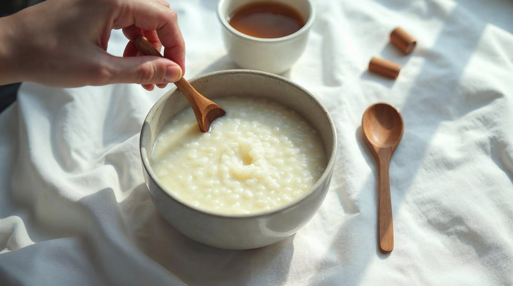

이종호 한의사 감수좋은꿈참사랑한의원 대표원장 (한의사 면허번호 19769)발행 2026-11-22 · 수정 2026-11-25
이 글의 차례
점심을 먹고 자리에 돌아와 앉았는데, 배 위쪽이 꽉 막힌 것처럼 묵직합니다. 허리띠를 한 칸 풀어 보고, 미지근한 물을 한 모금 마셔 보고, 괜히 등을 펴 봐도 그 답답함은 오후 세 시가 넘도록 그대로입니다. 많이 먹은 것도 아닌데 왜 이럴까 싶으시지요. 저는 진료실에서 이런 말씀을 자주 듣습니다.
"원장님, 저는 밥을 반 공기만 먹어도 배가 터질 것 같아요."
식사 뒤 속이 더부룩한 것은 한 가지 이유보다는 급하게 먹는 습관, 음식의 종류, 변비나 가스, 잠과 긴장이 겹쳐서 생기는 경우가 많습니다. 그래서 저는 "언제, 무엇을 먹고 나서, 얼마나 오래" 불편한지부터 여쭙습니다. 같은 "속이 안 좋다"라는 말 안에도 더부룩함과 속쓰림은 서로 다른 신호일 수 있어서, 둘을 나눠서 보는 것이 첫걸음입니다.
다만 체중이 이유 없이 줄거나 검은 변, 피를 토하는 일, 삼키기 어려움이 있다면 이 글보다 내과 검사가 먼저입니다.
검사는 괜찮다는데, 왜 계속 불편할까요
더부룩함으로 오시는 분들 가운데 꽤 많은 분이 이미 내시경을 받아 보셨습니다. 결과지에는 "큰 이상 없음" 또는 "가벼운 위염" 정도가 적혀 있습니다. 그 말을 들으면 한편으로는 안심이 되는데, 다른 한편으로는 더 답답해집니다. 그럼 지금 내 배가 이렇게 묵직한 건 뭐냐는 거지요. 어떤 분은 "제가 예민한 건가 싶어서 말도 못 했어요"라고 하십니다.
그 말을 들으면 저는 마음이 좀 무거워집니다. 그동안 혼자서 얼마나 참으셨을까 싶어서요.
불편은 실제로 있는 것입니다. 검사가 깨끗하다는 것은 걱정해야 할 큰 병이 보이지 않았다는 뜻이지, 불편이 없다는 뜻은 아닙니다. 검사에서 특별한 원인이 보이지 않는데 식후 불편이 오래 이어지는 경우를 기능성 소화불량이라고 부르기도 합니다.
이름이 붙는다고 불편이 사라지지는 않지만, 적어도 "내가 유난한 게 아니었구나" 하는 마음은 조금 덜어 드릴 수 있습니다.
저는 이런 분들께 위장만 보지 않습니다. 위는 혼자 일하지 않으니까요. 밥을 먹는 속도, 씹는 횟수, 식사 시간에 마음이 어디에 가 있는지, 밤에 몇 시에 잠드는지, 아침에 화장실은 편한지. 이런 것들이 다 위장의 하루와 이어져 있습니다. 한의학에서는 소화를 몸 전체의 리듬 속에서 보는데, 저는 그 관점이 진료실에서 꽤 쓸모 있다고 느낍니다.
더부룩함과 속쓰림은 이렇게 다릅니다
두 가지를 한데 묶어 "체했다", "속이 안 좋다"라고 말씀하시는 분이 많습니다. 그런데 조금만 나눠서 여쭤보면 느낌이 꽤 다릅니다.
더부룩함은 먹고 나서 배가 꽉 차고 묵직한 느낌입니다. 가스가 찬 듯 빵빵하고, 트림이 나오면 잠깐 시원하다가 다시 답답해집니다. 위쪽 배가 단단하게 뭉친 것 같다고 표현하시는 분도 있습니다. 속쓰림은 다릅니다. 명치나 가슴 한가운데가 타는 듯하고, 신물이 목까지 올라오기도 합니다. 누우면 더 심해지는 분이 많습니다.
한 가지 더 눈여겨보는 것이 있습니다. 밥을 먹으면 잠시 나아지고 배가 고프면 쓰린 경우입니다. 이런 모양이 이어진다면 저는 먼저 병원 검사가 필요한지부터 확인해 보시라고 말씀드립니다. 두 가지가 함께 오는 분도 많아서, 어느 쪽이 더 크고 하루 중 언제 심한지를 정리해 오시면 진료가 훨씬 수월해집니다.
속쓰림이 주된 불편이라면 속쓰림과 신물이 오래 갈 때 글도 함께 읽어 보세요.
왜 이런 불편이 생길 수 있을까요
가장 흔한 것은 먹는 속도입니다. 급하게, 많이 먹으면 위가 한꺼번에 늘어나야 하니 묵직함을 느끼기 쉽습니다. 위는 음식이 들어오면 천천히 늘어나며 받아 주는데, 이 과정이 따라오기도 전에 음식이 계속 밀려 들어오는 셈입니다. 덜 씹힌 음식은 위에 더 오래 머물기도 합니다.
음식의 종류도 있습니다. 기름진 음식, 밀가루, 찬 음식, 탄산, 커피가 불편을 키운다는 분이 있습니다. 모든 분께 똑같지는 않습니다. 어떤 분은 우유 한 잔에 배가 부글거리고, 어떤 분은 빵을 먹은 날만 오후 내내 답답합니다.
그래서 저는 "이 음식은 드시지 마세요"라고 미리 정해 드리기보다, 본인 몸이 어떤 음식에 어떻게 반응하는지 한 주쯤 지켜보시자고 말씀드립니다.
장의 사정도 함께 봐야 합니다. 변비가 있거나 가스가 많이 차면 배 전체가 더 답답하게 느껴집니다. 위가 문제인 줄 알았는데 이야기를 나눠 보니 사흘째 화장실을 못 가셨다는 분도 계십니다. 위와 장은 한 줄로 이어진 길이라, 아래가 막혀 있으면 위도 편할 수가 없습니다.
그리고 잠과 긴장입니다. 저는 이 부분을 꼭 여쭙습니다. 잠이 부족하거나 마음 쓸 일이 많은 시기에는 위장의 움직임이 더뎌지는 경우가 있습니다. 시험을 앞두고, 큰 발표를 앞두고, 집안에 걱정이 있을 때 밥이 잘 안 넘어가던 경험, 한 번쯤 있으시지 않나요? 몸은 생각보다 정직합니다. 마음이 바쁘면 위도 같이 움츠러듭니다.
손발과 배가 찬 분들도 식후에 더부룩하다는 말씀을 자주 하십니다. 배를 만져 보면 서늘하고, 따뜻한 음식을 먹으면 조금 낫다고 하십니다. 몸의 온기와 소화는 서로 붙어 다니는 이야기라, 저는 진료 때 배와 손끝이 어떤지 함께 봅니다.
진료실에서 자주 뵙는 모습들
특정한 분의 이야기가 아니라, 여러 해 진료실에서 자주 마주치는 모습을 몇 가지 그려 보겠습니다.
점심시간이 짧은 직장인들이 많습니다. 줄 서서 받은 밥을 십 분 만에 먹고, 바로 자리에 앉아 화면을 봅니다. 오후 두세 시쯤 배가 꽉 차서 집중이 안 된다고 하십니다. 이런 분들께는 오후에 배가 차는 시각과 식사 시간을 같이 적어 보시자고 합니다. 적어 보면 대개 그 사이에 이유가 보입니다.
시험 기간의 수험생도 있습니다. 평소에는 잘 먹던 아이가 긴장하면 몇 숟가락만 먹어도 체한 것 같다고 합니다. 부모님은 걱정이 돼서 더 먹이려 하시고, 아이는 더 답답해합니다. 이럴 때 저는 소화만이 아니라 잠은 몇 시간 자는지, 밤에 몇 시까지 깨어 있는지를 함께 여쭙습니다.
입맛은 있는데 먹고 나면 오래 더부룩하다는 어르신들도 자주 뵙습니다. 이 경우에는 씹는 상태가 어떤지, 틀니가 불편하지는 않은지, 대변은 어떤지, 드시는 약이 몇 가지인지를 꼭 확인합니다. 약 봉투를 가져오시라고 말씀드리는 이유입니다. 어르신이 새로 생긴 소화 불편이 점점 심해진다면 검사를 먼저 받으시도록 권하기도 합니다.
아이를 키우는 분들도 있습니다. 아이 밥 먹이고 남은 것을 서서 급하게 드시거나, 끼니를 거르다 저녁에 몰아서 드십니다. "제 밥은 늘 식어 있어요"라는 말을 들으면 저는 그 하루가 그려집니다. 그분께 필요한 건 대단한 처방보다 단 십 분이라도 앉아서 먹을 수 있는 시간인 경우가 많습니다.
이런 날 유독 더부룩하다는 분이 많습니다
진료실에서 "언제가 제일 불편하세요?" 하고 여쭈면, 대답 속에 비슷한 장면들이 겹쳐 나옵니다. 특정한 분의 이야기가 아니라 자주 듣는 모습을 모아 본 것입니다.
추운 날 뜨끈한 국밥에 밥을 말아 후루룩 드신 날이 있습니다. 국물에 밥이 적셔져 있으니 거의 씹지 않고 넘어갑니다. 먹을 때는 속이 따뜻하고 좋았는데, 한 시간쯤 지나면 명치가 묵직해집니다. 이런 분께는 밥을 말지 말고 따로 떠서 한 숟가락씩 국물에 적셔 드셔 보시라고 말씀드립니다. 같은 음식인데 씹는 횟수가 달라집니다.
회식이나 모임이 있었던 다음 날 아침도 있습니다. 전날 밤늦게까지 고기와 술, 마지막에 냉면이나 아이스크림까지 드시고 나면, 다음 날 아침에 일어나도 배가 아직 어제 저녁을 품고 있는 느낌이라고 하십니다.
이런 날은 억지로 아침을 든든히 드시기보다 미지근한 물과 죽이나 누룽지처럼 부드러운 것으로 가볍게 시작하고, 점심부터 평소대로 돌아오시는 편이 편하다는 분이 많습니다.
운전이나 배달처럼 차 안에서 끼니를 해결하는 분들도 자주 뵙습니다. 신호 대기하는 사이에 김밥을 몇 개씩 밀어 넣고, 먹자마자 다시 운전대를 잡습니다. 허리를 굽힌 채 앉아 있으니 배가 눌리고, 화장실 갈 틈이 없어 물도 덜 마십니다.
이런 분께는 하루 한 끼만이라도 차에서 내려 앉아서 드시는 것, 그리고 다음 배달 전에 차 옆에서 이삼 분이라도 서서 몸을 펴 보시는 것부터 권합니다.
집에서 일하는 분들은 또 다릅니다. 책상 앞에서 화면을 보며 점심을 먹고, 그 자리에서 그대로 오후 일을 이어 갑니다. 출근하던 시절에는 식당까지 걸어가고 돌아오는 길이 있었는데, 그 몇 분이 사라진 것이지요. 식사는 식탁에서, 먹은 뒤에는 집 앞을 한 바퀴 도는 것만으로도 오후가 다르다는 말씀을 종종 듣습니다.
체중을 줄이려고 며칠씩 샐러드와 닭가슴살만 드시다가 주말에 한꺼번에 많이 드시는 분도 있습니다. 줄여 놓았던 양만큼 위도 준비가 덜 된 상태에서 갑자기 많은 음식이 들어오니, 그날 저녁은 배가 터질 것 같다고 하십니다. 저는 이런 분께 평일을 너무 조이지 말고 주말을 너무 풀지 않는, 그 사이의 양을 함께 찾아보자고 말씀드립니다.
흔히 하는 오해 몇 가지
더부룩하면 소화제를 먹으면 된다고 여기기 쉽습니다. 가끔 한 번이면 그럴 수 있습니다. 하지만 일주일에 몇 번씩 반복된다면, 약보다 먼저 먹는 속도와 양, 변 상태, 잠을 돌아보는 편이 맞습니다. 드시는 약이 있다면 임의로 끊거나 늘리지 마시고 처방한 의사와 상의하세요.
밥을 먹고 바로 누워 쉬면 소화가 잘된다고 생각하시는 분도 계십니다. 그런데 바로 누우면 오히려 답답하거나 신물이 올라오는 분이 많습니다. 식후에는 십 분쯤 가볍게 걷는 편이 대개 더 편합니다.
밥을 거르면 속이 편해진다고 여기는 분도 있습니다. 거른 끼니만큼 다음 끼니에 몰아서 먹게 되면 더부룩함은 더 커질 수 있습니다. 적게, 제때 드시는 쪽이 위에게는 덜 부담스럽습니다.

일상에서 먼저 해 볼 수 있는 것
거창한 것부터 시작하지 않으셔도 됩니다. 저는 한 번에 한 가지만 바꿔 보시자고 말씀드립니다. 다 바꾸려고 하면 사흘을 못 갑니다. 하나라도 꾸준히 이어 가 보시자는 것이 제 생각입니다.
먼저 먹는 시간을 늘려 보세요. 한 끼에 최소 십오 분, 한 숟가락에 스무 번쯤 씹는다는 느낌으로요. 처음에는 어색하고 답답하실 겁니다. 숟가락을 한 번씩 내려놓으면 조금 쉬워집니다. 식사 중에는 휴대전화를 잠깐 뒤집어 두세요. 화면을 보며 먹으면 몇 숟가락을 먹었는지, 배가 얼마나 찼는지 모른 채 지나가기 쉽습니다.
양은 배가 팔십 퍼센트쯤 찼다고 느낄 때 수저를 내려놓는 정도가 좋습니다. 배부르다는 신호는 조금 늦게 옵니다. 다 먹고 나서 "아, 많이 먹었다" 싶으면 이미 넘친 것입니다.
하루의 순서로 보면 이렇습니다.
- 아침: 일어나서 미지근한 물 한 잔, 가볍게라도 먹기
- 점심: 십오 분 이상 천천히, 먹은 뒤 십 분쯤 걷기
- 저녁: 잠들기 세 시간 전까지 마치고, 야식과 탄산은 줄이기
- 밤: 정해진 시각에 눕기, 잠 시간을 지키기
불편을 키우는 음식이 있는지 궁금하시다면 일주일만 적어 보세요. 커피를 빈속에 마신 날, 밀가루를 먹은 날, 늦게 먹은 날에 동그라미를 쳐 두면 본인만의 모양이 보입니다. 배가 찬 편이라면 찬 음료보다 따뜻한 물이나 음식이 편한지도 살펴보세요.
그리고 잠입니다. 소화 이야기를 하다가 왜 잠 이야기냐고 물으시는 분도 있는데, 저는 이 둘을 떼어서 보기 어렵다고 생각합니다. 잠이 짧은 주에 속이 더 불편했던 기억이 있으시다면, 소화를 위해서라도 잠 시간을 먼저 챙겨 보세요.
한 끼를 순서대로 나눠 보면 이렇게 해 보실 수 있습니다.
- 식사 오 분 전: 미지근한 물을 반 컵쯤 천천히 마시기. 허리띠나 꽉 끼는 옷은 한 칸 느슨하게
- 첫 숟가락: 국물보다 건더기, 밥보다 채소나 나물, 두부·생선 같은 반찬부터
- 먹는 동안: 한 입 넣으면 숟가락을 내려놓고, 다 씹고 삼킨 뒤에 다시 들기
- 십 분쯤 지났을 때: 배가 어느 정도 찼는지 한 번 물어보기. 밥은 반 공기에서 멈출지 정하기
- 식사 직후: 바로 소파나 책상에 앉기보다 설거지를 하거나 집 앞을 십 분쯤 천천히 걷기
- 식후 두세 시간: 커피나 탄산음료는 이때까지 미루어 보기
이미 더부룩해졌다면 이렇게 해 보세요. 바로 눕지 말고 등을 펴고 앉거나 천천히 걷습니다. 따뜻한 물을 한두 모금씩 나누어 마십니다. 따뜻한 손바닥을 배 위에 얹고 배꼽 둘레를 시계 방향으로 아주 가볍게 문질러 보셔도 좋습니다. 누르지 말고 쓰다듬는 정도면 됩니다. 문질렀을 때 아프거나 한 곳이 단단하게 만져진다면 멈추고 진료를 받아 보세요.
그리고 다음 끼니는 양을 조금 줄여 위가 쉬어 갈 틈을 주세요.
일주일로 나누어 보면 이런 순서도 괜찮습니다.
- 1~2일째: 아무것도 바꾸지 말고, 한 끼 먹는 데 몇 분 걸리는지만 재어 보기
- 3~4일째: 숟가락 내려놓기를 더해서 한 끼를 십오 분 넘게 먹어 보기
- 5일째: 점심 뒤 십 분 걷기를 더하기
- 6~7일째: 저녁을 평소보다 삼십 분 일찍 마쳐 보기
- 일주일 뒤: 더부룩함이 가장 덜했던 날이 어떤 날이었는지 메모를 보며 돌아보기
모든 방법이 모든 분께 맞지는 않습니다. 해 보시고 편해지는 것은 남기고, 오히려 불편한 것은 내려놓으시면 됩니다. 그 결과를 진료실에 가져오시면 그게 가장 좋은 이야깃거리가 됩니다.
얼마나 지켜보고, 언제 상담하면 좋을까요
과식한 날 하루 이틀 더부룩한 정도라면 식사량과 속도를 조절하며 지켜보셔도 됩니다. 몸이 스스로 정리할 시간을 주는 것이지요.
생활을 바꿔 봐도 더부룩함이 이삼 주에서 한 달 넘게 이어지거나, 일주일에 여러 번 반복된다면 진료를 받아 보시길 권합니다. 오래 참는다고 상이 나오는 일이 아닙니다. 너무 오래 혼자 견디지 않으셨으면 합니다.
체중이 이유 없이 줄거나, 검은 변이나 피가 섞인 변을 보거나, 음식을 삼키기 어렵거나, 토하는 일이 계속된다면 기다리지 마시고 내과 검사를 먼저 받으세요. 이 부분은 제가 조심스럽게, 그러나 분명하게 말씀드리고 싶은 대목입니다.
가족이 함께 도울 수 있는 것
더부룩함은 혼자 애쓰는 것보다 식탁을 함께 쓰는 사람이 조금 거들어 줄 때 훨씬 수월해집니다. 식사 시간에 텔레비전을 끄고 서로 오늘 있었던 일을 한두 마디 나누다 보면, 먹는 속도가 자연스럽게 느려집니다. 누가 먼저 다 먹었다고 바로 일어나 치우기보다 마지막 사람이 수저를 놓을 때까지 함께 앉아 있어 주는 것도 좋습니다.
"조금만 더 먹어", "남기면 아깝다"는 말은 마음이 담긴 말이지만, 이미 배가 찬 사람에게는 부담이 됩니다. 반찬을 처음부터 덜 담고, 더 먹고 싶으면 더 덜어 가는 식탁이면 남는 음식도 줄고 과식도 줄어듭니다. 저녁을 먹은 뒤에는 함께 동네를 한 바퀴 걷자고 먼저 말을 꺼내 주세요.
어르신이 계신 집이라면 요즘 식사량이 줄지는 않았는지, 씹기 불편해하시지는 않는지 곁에서 살펴 주시는 것이 큰 도움이 됩니다.
도시락을 싸 주는 가족이 있다면 밥을 꾹꾹 눌러 담기보다 조금 덜 담고 반찬 칸을 넉넉히 해 주세요. 직장에서 십 분 만에 먹어야 하는 사정은 바꾸기 어려워도, 도시락의 양은 집에서 바꿀 수 있습니다. 저녁 늦게 돌아오는 식구에게는 기름진 음식보다 데우기만 하면 되는 국과 부드러운 반찬을 남겨 두면, 늦은 저녁의 부담이 조금 줄어듭니다.
식탁에서 오가는 작은 배려가 쌓이면, 밥 먹는 시간이 다시 편안한 시간으로 돌아오는 데 생각보다 큰 힘이 됩니다.
처음 오시면 이렇게 진료합니다
좋은꿈참사랑한의원에 처음 오시면 저는 먼저 이야기를 듣습니다. 불편이 언제, 어떤 음식 뒤에 시작되는지, 얼마나 오래 이어지는지, 혹시 경고 신호는 없는지부터 확인합니다. 그다음에 이런 것들을 여쭙습니다. 먹고 몇 분 뒤에 불편해지는지, 대변은 규칙적인지, 잠은 몇 시에 들고 몇 번 깨는지, 손발이나 배가 찬 편인지, 요즘 마음 쓸 일이 많은지.
소화를 물으러 왔는데 잠과 마음까지 묻는다고 의아해하시는 분도 있지만, 대부분은 이야기를 나누다 보면 "그러고 보니 그때부터였네요" 하십니다.
그리고 양손을 내어 달라고 말씀드립니다. 저는 모든 분께 양쪽 손목의 맥을 짚습니다. 오른쪽과 왼쪽을 번갈아 짚으며, 가볍게 얹었을 때와 조금 눌렀을 때 맥이 어떻게 다른지 살핍니다. 필요하다고 판단되면 혀를 보고, 배를 눌러 단단하거나 불편한 곳이 있는지, 배가 차지는 않은지 확인합니다.
인바디 770 같은 원내 장비로 몸 상태를 함께 보기도 하고, 가져오신 식사 기록이나 내시경 결과가 있으면 함께 놓고 봅니다.
그런 다음 지금의 더부룩함이 식사 습관 쪽인지, 장의 움직임 쪽인지, 긴장과 잠 쪽인지 제가 본 것을 설명드립니다. 상태에 맞춰 침이나 한약 상담 같은 방법을 함께 정하고, 다음 진료까지 바꿔 볼 생활 습관 한 가지를 같이 고릅니다. 귀가하시기 전에는 집에서 지켜보실 점을 알려 드립니다.
다시 오시면 저는 지난번에 정한 그 한 가지가 어땠는지부터 여쭙습니다. 잘 안 됐다면 왜 어려웠는지를 듣는 것이 제게는 더 쓸모 있는 이야기입니다.

이렇게 기록해 오시면 상담이 쉬워집니다
진료실에서 기억만으로 말씀하시려면 막상 잘 떠오르지 않습니다. 휴대전화 메모장에 간단히 적어 오시면 충분합니다. 불편했던 날의 식사 시각과 먹은 음식, 대략 몇 분 만에 먹었는지, 더부룩함이 몇 시에 시작해서 얼마나 이어졌는지, 그날 대변은 어땠는지 정도면 됩니다. 복용 중인 위장약, 진통소염제, 아스피린 같은 약 이름도 함께 적어 주세요.
잠든 시각과 깬 시각을 같이 적어 오시면 더 좋습니다.
꼼꼼하지 않아도 괜찮습니다. 사흘만 적어 와도 저와 이야기할 거리가 생깁니다.
이럴 땐 바로 진료를 받으세요
더부룩함은 대개 생활을 살피며 지켜볼 수 있지만, 그날 바로 확인이 필요한 경우가 있습니다. "체한 것 같다"는 말 뒤에 다른 문제가 숨어 있을 때가 있어서입니다.
- 명치나 가슴이 조이듯 아프고 식은땀, 숨참, 어지러움이 함께 있을 때. 체한 것과 비슷하게 느껴져도 심장 문제일 수 있으니 가까운 응급실로 가세요.
- 배가 갑자기 심하게 아프거나, 배 전체가 딱딱하게 굳고 손을 대기 어려울 만큼 아플 때
- 피를 토하거나 커피 찌꺼기 같은 것을 토할 때, 검은 변과 함께 어지럽고 기운이 빠질 때
- 열이 나면서 오른쪽 윗배가 아프거나 눈의 흰자위·피부가 노랗게 보일 때
- 계속 토해서 물도 넘기기 어렵거나, 방귀와 대변이 모두 멈추고 배가 점점 불러 올 때
이런 경우에는 한의원보다 가까운 응급실이 먼저입니다. 밤이나 주말이라고 아침까지 참지 않으셨으면 합니다.
이런 증상은 먼저 확인이 필요합니다
다음과 같은 경우에는 한의원 진료에 앞서 내과에서 내시경 같은 검사를 먼저 받으시길 권합니다. 이유 없이 체중이 줄어드는 경우, 검은 변이나 피가 섞인 변을 보는 경우, 피를 토하거나 커피 찌꺼기 같은 것을 토하는 경우, 음식을 삼키기 어렵거나 계속 토하는 경우, 빈혈이 있다는 말을 들은 경우입니다.
나이가 들어 새로 생긴 소화 증상이 점점 심해지거나 가족 중에 위암·대장암을 앓은 분이 있다면 검사를 미루지 않으셨으면 합니다. 갑자기 배가 심하게 아프거나 가슴 통증, 식은땀이 함께 있다면 가까운 응급실로 가세요.
드시는 약은 임의로 끊거나 줄이지 마시고 처방한 의사와 상의해 주세요.
더부룩한 배를 안고 하루를 보내는 일은 생각보다 사람을 지치게 합니다. 밥 먹는 시간이 즐겁지 않고, 오후가 길게 느껴지지요. 그 마음, 저는 압니다. 다음에 오시면 언제 제일 불편했는지, 그 전에 무엇을 드셨는지부터 천천히 여쭙겠습니다.
식사 뒤 더부룩함이 몇 주째 이어지고 있다면, 상도역 근처 좋은꿈참사랑한의원에서 언제 무엇을 드셨는지부터 함께 짚어 보셨으면 합니다. 상도동 이웃분들, 노량진에서 공부하거나 일하시는 분들, 동작구 여러 동네에서 점심시간을 쪼개 오시는 분들을 자주 뵙습니다.
함께 읽으면 좋은 글
- 밥을 빨리 먹는 습관이 소화에 어떤 영향을 주나요?
- 트림과 가스가 자주 차고 배가 빵빵할 때는 어떤 점을 살펴보나요?
- 속쓰림과 신물이 오래 갈 때 어떤 점을 살펴보고, 언제 검사를 받아야 하나요?
- 점심 뒤 벨트가 조이고 오후 내내 더부룩할 때는 무엇을 살피나요?
- 스트레스를 받으면 속이 아프고 설사나 변비가 반복될 때는 어떻게 살피나요?

생활에서 해 볼 것
- 아침: 일어나서 미지근한 물 한 잔, 가볍게라도 먹기
- 점심: 십오 분 이상 천천히, 먹은 뒤 십 분쯤 걷기
- 저녁: 잠들기 세 시간 전까지 마치고, 야식과 탄산은 줄이기
먼저 확인이 필요한 신호
- 다음과 같은 경우에는 한의원 진료에 앞서 내과에서 내시경 같은 검사를 먼저 받으시길…
- 이유 없이 체중이 줄어드는 경우, 검은 변이나 피가 섞인 변을 보는 경우, 피를 토…
- 나이가 들어 새로 생긴 소화 증상이 점점 심해지거나 가족 중에 위암·대장암을 앓은…
자주 묻는 질문
식후 더부룩함은 한의원에서 어떻게 살피나요?
불편이 생기는 시점과 음식, 대변 상태를 먼저 여쭙고 잠·긴장·몸의 온기를 함께 들은 뒤, 양쪽 손목의 맥을 짚고 필요하면 혀와 배를 살핍니다.
더부룩함과 속쓰림은 어떻게 다른가요?
더부룩함은 배가 꽉 차고 묵직한 느낌이고, 속쓰림은 명치나 가슴이 타는 듯하거나 신물이 올라오는 느낌입니다. 두 가지가 함께 나타나는 분도 많습니다.
내시경 검사를 먼저 받아야 하나요?
체중 감소, 검은 변이나 혈변, 피를 토함, 삼킴 곤란, 계속되는 구토, 빈혈 같은 경고 신호가 있으면 먼저 내과 검사를 권합니다.
소화제를 먹고 있는데 진료받을 수 있나요?
네, 복용 중인 약을 모두 알려 주세요. 약은 임의로 끊거나 줄이지 마시고 처방한 의사와 상의해 주세요.
검사에서 이상이 없다는데 계속 더부룩하면 어떻게 하나요?
불편은 실제로 있는 것이니 참고 넘기지 않으셔도 됩니다. 식사 속도와 양, 대변, 잠과 긴장을 함께 적어 두셨다가 진료 때 말씀해 주시면 생활 속 흐름을 같이 살펴봅니다.
밥을 먹고 바로 누우면 안 되나요?
바로 누우면 더 답답하거나 신물이 올라온다는 분이 많습니다. 가능하면 식후 두세 시간은 앉거나 가볍게 움직이고, 꼭 누워야 한다면 상체를 조금 높여 보세요.
더부룩할 때 탄산음료를 마시면 시원해지지 않나요?
트림으로 잠깐 시원하게 느껴질 수 있지만 가스가 더 차서 다시 답답해지는 분도 많습니다. 미지근한 물을 조금씩 드셔 보시고 어느 쪽이 편한지 기록해 보세요.
배를 문질러 주면 도움이 되나요?
따뜻한 손으로 배꼽 둘레를 시계 방향으로 가볍게 쓰다듬으면 편하다는 분이 있습니다. 세게 누르지 말고, 문지를 때 아프거나 단단하게 만져지는 곳이 있으면 멈추고 진료를 받아 보세요.
좋은꿈참사랑한의원은 재진 때 지난번 이야기부터 이어서 여쭙니다. 진료시간과 예약은 오시는 길에서 확인하세요.
어디서 상담받을 수 있나요?
좋은꿈참사랑한의원은 서울 동작구 만양로2길 2 신성빌딩 3층·5층(서울 동작구 상도동, 7호선 상도역 3번 출구 근처)에 있습니다. 한의사 3명(이종호 대표원장, 조영기 수석진료원장, 정원영 진료원장)이 진료합니다. 진료시간은 평일 09:30~20:00(점심 13:00~14:00), 토·일·공휴일 09:30~15:00이며, 방문 전 전화로 확인을 권합니다. 예약은 네이버 예약, 카카오톡 상담, 전화 02-815-7510로 받습니다.
이 글은 일반적인 건강 정보이며 개인의 진단이나 치료를 대신하지 않습니다. 증상이 있거나 복용 중인 약이 있다면 진료를 통해 확인하세요. 치료 효과는 개인마다 다를 수 있습니다.
작성 기준: 일반적으로 알려져 있는 건강 정보를 참고해 정리했습니다(대표원장 감수). 증상 기록은 1~2주 동안 하루 1회, 비슷한 시간에 적어 오시면 지난 상태와 비교하기 쉽습니다.